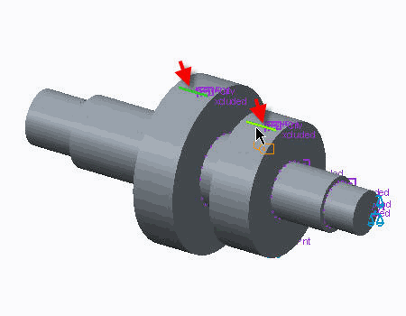
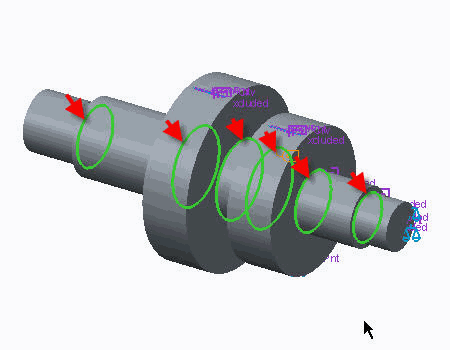

练习: 处理奇点
目标
成功完成此练习后，您将能够：
- 定义排除 AutoGEM 控制的隔离 (IEAC)。
假定背景
在第一个研究中，定义了 AutoGEM 工具的排除 AutoGEM 控制的隔离 (IEAC) 特征。这使您能够使用奇点位置隔离来控制解的质量。在第二个研究中，可从载荷以及几何使用改进的模拟模型。在此情况下，通过将其与原始模型进行比较可标识新载荷和约束条件。此新方法用来显示仅访问 IEAC 工具不会自动修复解：Creo Simulate 解。
“关闭窗口”(Close Window) “拭除未显示的”(Erase Not Displayed)
“拭除未显示的”(Erase Not Displayed) 
 Simulate_Modeling\IEAC
Simulate_Modeling\IEAC
 FRICTION_GEAR_SHAFT_S1_SIMULATE.PRT
FRICTION_GEAR_SHAFT_S1_SIMULATE.PRT
|
|
||
 |
Creo Parametric 用户打开 FRICTION_GEAR_SHAFT_S1.PRT。 | |
|
|
||
-
任务 1. 定义 IEAC。
1. 在功能区中，选择“精细模型”(Refine Model) 选项卡。
2. 在 AutoGEM 组中从“控制”(Controls) 下拉菜单中选择“排除的隔离”(Isolate for Exclusion) 。“排除控制的隔离”(Isolate for Exclusion Control) 对话框随即显示。
3. 在模型树中，展开“模拟特征”(Simulation Features)，然后选择 PNT0。完成以下字段：
- 从“实体的隔离”(Isolation for Solids) 下拉菜单中选择“最大元素尺寸”(Maximum Element Size)。
- 在“最大元素尺寸”(Maximum Element Size) 字段中键入 30。
- 选择“排除”(Exclude)。
4. 在“排除控制的隔离”(Isolate for Exclusion Control) 对话框中，单击“确定”(OK)。
5. 在功能区中，选择“精细模型”(Refine Model) 选项卡。
6. 在 AutoGEM 组中从“控制”(Controls) 下拉菜单中选择“排除的隔离”(Isolate for Exclusion) 。“排除控制的隔离”(Isolate for Exclusion Control) 对话框随即显示。
7. 按下 CTRL 键并选择两条曲线用作载荷施加的参考，如图所示。

8. 从“实体的隔离”(Isolation for Solids) 下拉菜单中选择“最大元素尺寸”(Maximum Element Size)。
9. 在“最大元素尺寸”(Maximum Element Size) 字段中键入 30。
10. 选择“排除”(Exclude)。
11. 在“排除控制的隔离”(Isolate for Exclusion Control) 对话框中，单击“确定”(OK)。
12. 在功能区中，选择“精细模型”(Refine Model) 选项卡。
13. 在 AutoGEM 组中从“控制”(Controls) 下拉菜单中选择“排除的隔离”(Isolate for Exclusion) 。“排除控制的隔离”(Isolate for Exclusion Control) 对话框随即显示。
14. 按下 CTRL 键并选择轮廓中更改处模型上的边，如图所示。
15. 从“实体的隔离”(Isolation for Solids) 下拉菜单中选择“最大元素尺寸”(Maximum Element Size)。
16. 在“最大元素尺寸”(Maximum Element Size) 字段中键入 20。
17. 选择“排除”(Exclude)。
18. 在“排除控制的隔离”(Isolate for Exclusion Control) 对话框中，单击“确定”(OK)。
-
任务 2. 为模型定义和运行静态分析。
1. 在功能区中，选择“主页”(Home) 选项卡。
2. 在“运行”(Run) 组中单击“分析和研究”(Analyses and Studies) 。将出现“分析和设计研究”(Analyses and Design Studies) 对话框。
3. 单击“文件”(File) > “新建静态分析”(New Static)。将出现“静态分析定义”(Static Analysis Definition) 对话框。
4. 完成以下步骤：
- 在“名称”(Name) 字段中键入 friction_gear_MPA_excl。
- 选择显示在“约束集/元件”(Constraint Set/Component) 和“载荷集/元件”(Load Set/Component) 部分中的约束集和载荷集。
- 单击“收敛”(Convergence) 选项卡，然后从“方法”(Method) 下拉菜单中选择“多通道自适应”(Multi-Pass Adaptive)。
- 在“收敛百分比”(Percent Convergence) 字段中键入 8。
- 在“多项式阶”(Polynomial Order) 部分的“最小”(Minimum) 字段中键入 1，在“最大”(Maximum) 字段中键入 9。
- 校验“局部位移、局部应变能和全局 RMS 应力”(Local Displacement， Local Strain Energy and Global RMS Stress) 已被选中。
单击“排除的元素”(Excluded Elements) 选项卡并选择“排除元素”(Exclude Elements)。 - 在“忽略”(Ignore) 部分中，选择“应力和位移”(Stresses and Displacements)。
- 在“限制”(Limit) 部分中，选择“多项式阶”(Polynomial Order)，然后在关联的字段中键入 2。
5. 单击“确定”(OK) 返回到“分析和设计研究”(Analyses and Design Studies) 对话框。
6. 单击“配置运行设置”(Configure Run Settings)
 。将出现“运行设置”(Run Settings) 对话框。
。将出现“运行设置”(Run Settings) 对话框。
7. 默认情况下，结果和临时输出目录被设置在工作目录中。两种分析都储存在此位置。单击“确定”(OK)。
8. 在“分析和设计研究”(Analyses and Design Studies) 对话框中选择 friction_gear_MPA_excl，然后单击“开始运行”(Start Run)
 。单击“是”(Yes) 以运行交互诊断。
。单击“是”(Yes) 以运行交互诊断。
9. 分析完成后，单击“显示研究状况”(Display Study Status)
 查看汇总报告。
查看汇总报告。
在汇总报告中，请注意满足收敛。这可能是因为 IEAC 控制被添加到模型中。
10. 关闭所有对话框并返回至“分析和设计研究”(Analyses and Design Studies) 对话框。
-
任务 3. 打开并使用改进的模拟模型以消除静态分析中的应力奇点。
1. 打开 Creo Simulate 零件文件 FRICTION_GEAR_SHAFT_S2_SIMULATE.PRT。
请注意，已经更改载荷的参考并将其定义到曲面，而非曲线。使用“弹簧”和“受力连接”元素定义约束。两种新方法均可消除应力奇点。因此，不再需要 IEAC 控制。同时提高结果的质量。此外，将圆角添加到模型中可减小先前发现有问题的位置上的高应力。
2. 在功能区中，选择“主页”(Home) 选项卡。
3. 在“运行”(Run) 组中单击“分析和研究”(Analyses and Studies) 。将出现“分析和设计研究”(Analyses and Design Studies) 对话框。
4. 单击“文件”(File) > “新建静态分析”(New Static)。将出现“静态分析定义”(Static Analysis Definition) 对话框。
5. 完成以下步骤：
- 在“名称”(Name) 字段中，键入 friction_gear_MPA_IMP。
- 选择显示在“约束集/元件”(Constraint Set/Component) 和“载荷集/元件”(Load Set/Component) 部分中的约束集和载荷集。
- 单击“收敛”(Convergence) 选项卡，然后从“方法”(Method) 下拉菜单中选择“多通道自适应”(Multi-Pass Adaptive)。
- 在“收敛百分比”(Percent Convergence) 字段中键入 8。
- 在“多项式阶”(Polynomial Order) 部分的“最小”(Minimum) 字段中键入 1，在“最大”(Maximum) 字段中键入 9。
- 校验“局部位移、局部应变能和全局 RMS 应力”(Local Displacement， Local Strain Energy and Global RMS Stress) 已被选中。
6. 单击“确定”(OK) 返回到“分析和设计研究”(Analyses and Design Studies) 对话框。
7. 单击“配置运行设置”(Configure Run Settings)
。将出现“运行设置”(Run Settings) 对话框。
8. 默认情况下，结果和临时输出目录被设置在工作目录中。两种分析都储存在此位置。单击“确定”(OK)。
9. 在“分析和设计研究”(Analyses and Design Studies) 对话框中选择 friction_gear_MPA_IMP，然后单击“开始运行”(Start Run)
。单击“是”(Yes) 以运行交互诊断。
10. 分析完成后，单击“显示研究状况”(Display Study Status)
查看汇总报告。
在汇总报告中，请注意现在解完全收敛而不必排除任何元素。同时，请注意大部分输出的值是不同的。
11. 关闭所有对话框并返回到 Creo Simulate 窗口。
练习就此结束。